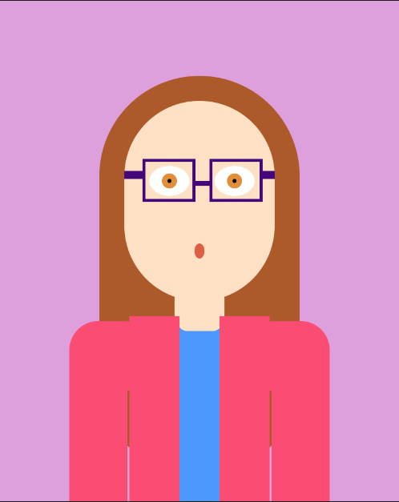

Galeria Imagen Escrita
Trabajos de exploracion
Presiona los nombres para ir al editor
Autorretrato

Ejercicio de experimentación de dibujo, mediante distintas figuras geométricas se realiza un dibujo/autorretrato lo mas fiel posible a la realidad.
Ciclo for
Ejercitacion del ciclo for con una mezcla de circulos que van en un degradado ascendente y descendente. Al pasar el mouse por el sketch puedes ver como cambian los colores del fondo.
Espiral
Espiral creado con óvalos, estos van creando el espiral alejándose muy poco por lo que pareciera un circulo muy grande.
Recursion

Ejercicio de recursión a base de circulos que al mezclarse y estar e una gama de colores similar podría verse similar a unas escamas
Proyecto Piano
Este es un piano que puede ser tocado tanto con mouse como con el teclado del computador especificamnte con las teclas a/A, s/S, d/D, f/F, j/J, k/K, l/L.